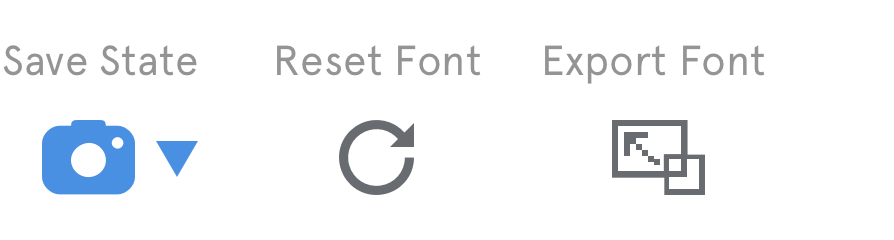

Foundry is a tool that lets artists, designers, and programmers generate novel fonts in seconds.
Last year, I wrote a Python program that utilizes the FontForge API to distort, warp, and otherwise alter font files, from the visual aesthetic to the copyright information. I was amazed at how easily I could generate a completely novel font–which, through traditional means, is difficult and time-intensive. Foundry is a proposal for a desktop app that lets a user upload any (correctly licensed) font and generate a new one, ready to use for any project.
Tools Used
Role
Animation Ideation Interaction Design Programming Visual Design Wireframing
Foundry is built on a system of filters.
The Filter UI
I designed the filter screen as a grid of font effect options to provide a visual approximation of what the output will be. Live preview of the specific font would take too long to load*, so these images stay static.
After the user selects a filter, a secondary menu becomes available on the right side. This allows the user to input some initial arguments for the transformation, which can always be changed later.
When the user submits
their filter choice, they're met with a loading bar–transformations to font files are decently CPU-intensive, since the script iterates through three nested structures of data to transform the points of a glyph. A loading bar lets
the user know that the app is working hard!
Reasoning
I used a large filter option menu with colorful visuals for a few reasons: first, since transformations often take considerably longer than functions in most other art programs, I want the user to take more time before applying an
effect.
Pairing the options with a large visual also helps the user visualize what the result will be. And finally, it creates a more welcoming and clean UI that encourages users with little to no experience with digital art programs.
For power users, the same functions (as with all other tools in the program) can be accessed via the OS menu bar.
{kind=link}
Foundry is powerfully simple and ready for customization.
Code Injection
I realized that there would be no way to build in every cool effect to the vanilla app–so I provided an interface for coders to create their own filters. All it requires is a working knowledge of Python programming and a skim through the docs for the FontForge API, which is the only dependency.
Features
The code injection UI is a fairly simple text editor with syntax highlighting and a compiler to check for errors. I also had the idea of including a menu of "code blocks" that generate a predetermined segment of code starting at the user's typehead. These perform the most common functions, like choosing certain letters to distort, creating global variables, or starting a method for an effect.
{kind=link}
{kind=link}
{kind=link}
The Top Menu Bar
The top menu bar contains the functions most essentially to the app. Starting on the left side:

{kind=link}
Save state
Save state allows the user to save their settings at any point, and return to them in the future. This is a useful feature because experimentation is at the heart of the app, and iterations should be quickly accessible.
Reset Font
Return the font to its original state.
Export Font
This toggles a popup window with a different font format options (if multiple are selected, a zip file will automatically be saved). Clicking "export" on screen 1 will activate the standard Save As dialogue, shown on screen 2.
{kind=link}
{kind=link}
Tools & Operations
The shape operation tools are standard vector functions that all for various combinations and subtractions of vector shapes.
The tools on the right side provide additional control over the letterform, allowing the user to draw new shapes, add and delete contour points, use a brush, and erase areas. While the filters are great for blanket transformations
of an entire font, it's still important that the user has further control over the details.

View Options
The view options provide three simple functions: zoom the window view in or out, toggle the grid, and an onion skin mode that tracks the user's most recent tool action and keeps its temporarily as a layer underneath the active layer. I personally work with vector programs every day and wish this was a function; its use in Foundry would be to provide a quick visual of what would happen when the user clicks "step back" in the bottom right of the screen.
Typography is an art;
{kind=link}
{kind=link}
Most fonts have tons of glyphs.
The glyph selector provides a quick way to cycle through a font's glyphs, with filters on the left side to toggle letters, numbers, and symbols.
The arrows allow the user to slide through the list and choose the glyph that they'd like to see in the main window.
Striking a Balance
While designing a system for selecting and viewing glyphs, I realized I needed to strike a balance between the singular glyph view, and seeing the glyphs in context: with the original font, with other glyphs with the same effect, with different font weights in the same typeface, and with uppercase and lowercase versions of the glyph. That takes us to the next section...
{kind=link}
A tool for quick previews
I came up with four different preview toggles that let the user get a better sense of how their font works in context. They sit at the bottom of the work area, and can be toggled on or off with a single click.
{kind=link}
Compare
The compare toggle activates a split view where the current glyph is compared to its original form for comparison.
{kind=link}
Specimen
The specimen toggle generates a random gibberish phrase to show how the glyphs interact once placed into words, sentences, and paragraphs. A slider pops up above the toggle to control size–the smaller the size, the more words are generated.
{kind=link}
Change case
Changing case is only allowed for allowed for letters; it toggles between the uppercase and lowercase versions of a letter, if available.

Change weight
Changing weight is available if the original font files of other weights are present in the working directory. The toggle opens a small popup menu with the options.
{kind=link}
BRANDING
Typography
Of couse, typographic style is essential for a program all about type.
{kind=link}
I chose Dia Black for its fun, trendy aesthetic. But I knew I wanted a wide, bold font to make the program interface easy to navigate and welcoming to beginners.
I chose Apercu for its ability to beautifully and clearly render text at small sizes, which was perfect for buttons and interfaces. Apercu Mono was a logical next choice for the code font.
Colors
The use of color is separated into three levels: top, mid, and base. Base colors are grayscale and form the structure of all UI elements. Mid level colors are used for secondary functions, buttons, or any information less important to the user. Top level colors were chosen to stand out starkly against the base colors, and denote major functions, toggle & active states, and user inputs like sliders.
{kind=link}
Illustrations
The curvy, fluid illustrations I use throughout the project are meant to emulate the process of morphing and molding fonts. They make only small appearances in the actual program but would be used for marketing and advertising purposes.
{kind=link}
{kind=link}
{kind=link}
{kind=link}
{kind=link}
{kind=link}